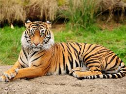
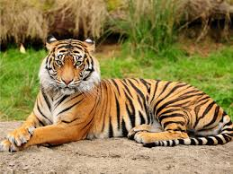

Madhya Pradesh is home to 11 National Parks, including Bandhavgarh National Park, Kanha National Park, Satpura National Park, Sanjay National Park, Madhav National Park, Van Vihar National Park, Mandla Plant Fossils National Park, Panna National Park, and Pench National Park. There are also a number of natural preserves, including Amarkantak, Bagh Caves, Balaghat, Bori Natural Reserve, Ken Gharial, Ghatigaon, Kuno Palpur, Narwar, Chambal, Kukdeshwar, Narsinghgarh, Nora Dehi, Pachmarhi, Panpatha, Shikarganj, Patalkot and Tamia. Pachmarhi Biosphere Reserve in Satpura Range, Amarkantak biosphere reserve and panna national park are three of the 18 biosphere reserves in India. Kanha, Bandhavgarh, Pench, Panna, and Satpura National Park are managed as Project Tiger areas. Sardarpur sanctuary in Dhar and Sailana are managed for conservation of kharmor or lesser florican. Ghatigaon sanctuary is managed for great Indian bustard or Son Chiriya. The National Chambal Sanctuary is managed for conservation of gharial and mugger, river dolphin, smooth-coated otter and a number of turtle species. Ken-gharial and Son-gharial sanctuaries are managed for conservation of gharial and mugger. Barasingha is the state animal and dudhraj is the state bird of Madhya Pradesh. Based on composition, the teak and sal forests are the important forest formations in the state. Bamboo-bearing areas are widely